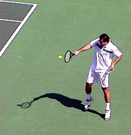
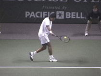
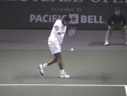

← Bài trước: One Hand Backhand | 🏠 Classic Lessons Trang chủ | Bài tiếp: → One-Handed Backhand Preparation
Hoàn thiện cú trái tay một tay
Thư viện kiến thức quần vợt thống nhất — Cơ bản, Phân tích kỹ thuật, Thư viện tham khảo và nhiều hơn nữa
Hoàn thiện cú trái tay một tay
Scott Murphy
Với các yếu tố kỹ thuật tốt, cú trái tay một tay là một cú đẹp và đáng tin cậy. Không có lý do gì bạn không thể phát triển cú này ngay cả khi bạn đã sợ cú trái tay trong nhiều năm.
Mark Philippoussis thể hiện sự thống trị của mình với phong cách cổ điển đẹp.
Trong bài viết trước, chúng ta đã xem xét giai đoạn chuẩn bị. (Xem Phần 1). Bây giờ hãy hoàn thiện cú trái tay một tay từ giai đoạn chuẩn bị đến khi đánh, tiếp tục sử dụng một số tay vợt hàng đầu thế giới để minh họa cách thực hiện.
Điểm đầu tiên cần lưu ý là tâm lý. Đánh cú trái tay một tay chủ yếu là vấn đề về thái độ.
Các tay vợt có các yếu tố kỹ thuật tốt có thể vẫn không đánh bóng thuyết phục trừ khi họ có quyết tâm "tập trung vào bóng". Điều này không có nghĩa là nghiêng cơ thể, mà có nghĩa là thể hiện sự thống trị của mình!

Pete Sampras tạo điểm tiếp xúc xa hơn so với bất kỳ tay vợt nào trong trận đấu.
Nhiều tay vợt làm tốt điều này trên cú thuận tay của họ nhưng sự thuyết phục về mặt tinh thần không giống nhau trên cú trái tay. Sau khi đạt được sự hiểu biết về mô hình cú trái tay, việc tiếp cận cú này như thể bạn muốn giành chiến thắng là rất quan trọng. Điều này không có nghĩa là cố gắng đánh mọi cú trái tay! Nó hơn là đánh bóng khi và nơi bạn muốn thay vì bóng quyết định.
Khoảng cách tiếp xúc sẽ khác nhau tùy theo từng người, nhưng trên mọi cú trái tay một tay vững chắc, điểm tiếp xúc nằm phía trước hoặc phía sau chân dẫn bóng. Đánh bóng phía sau hoặc phía sau chân dẫn bóng sẽ làm giảm đáng kể cơ hội kiểm soát cú của bạn.

Hãy tưởng tượng bắt đầu đòn đánh bằng cách kéo phần lưng của vợt đến bóng.
Khi bạn bắt đầu di chuyển về phía trước, kéo phần lưng của vợt đến bóng trong khi giữ khớp cổ tay cố định. Nếu phần lưng không dẫn đầu dây vợt, bạn vẫn có thể đánh bóng mạnh ngay cả khi khoảng cách tiếp xúc đúng. Tay đánh bóng nên đi qua gần hông khi bạn đưa vợt về phía bóng, đảm bảo hỗ trợ tốt tại điểm tiếp xúc.
Khi bạn đưa vợt về phía bóng, cánh tay đánh bóng nên thẳng ra tốt hơn trước khi tiếp xúc. Vị trí cánh tay thẳng này tiếp tục sau khi đánh bóng, suốt quá trình pha vung vợt theo đà. Không thể nhấn mạnh điểm này quá nhiều. Nguyên nhân phổ biến nhất của cú trái tay một tay yếu là "gập cánh tay", với cánh tay uốn cong tại điểm tiếp xúc. Đây là lý do tại sao chúng ta đã nhấn mạnh trong giai đoạn chuẩn bị rằng vòng quay nên nhỏ gọn nhất có thể.



Mark Philippoussis thẳng cánh tay đánh bóng ngay khi vợt di chuyển về phía bóng. Nó vẫn thẳng tại và sau khi tiếp xúc.
Điểm tiếp xúc chính xác - tức là, bạn đánh bóng ở phía trước bao xa là vấn đề về cảm giác cá nhân. Để thiết lập khoảng cách tiếp xúc cá nhân của mình, hãy đảm bảo giữ đầu cố định và vuông góc với vai. Bây giờ hãy theo dõi bóng cho đến khi bạn NGHE bóng đánh vào dây vợt của bạn.

Scott Murphy đến từ Marin County, California, nơi anh bắt đầu chơi quần vợt từ tuổi 5 trong một gia đình yêu thích quần vợt. Cả hai bố mẹ của anh đều là những người ảnh hưởng lớn trong sự phát triển của anh. Anh cũng nhận được sự hướng dẫn từ huyền thoại Marin Hal Wagner và cựu tay vợt hàng đầu thế giới Harry Roach. Scott là một cựu sinh viên của Đại học California tại Berkeley, nơi anh chơi bóng chày và bóng đá nhưng vẫn tiếp tục rèn luyện kỹ năng quần vợt của mình với huấn luyện viên nổi tiếng Chet Murphy.
Anh là huấn luyện viên trưởng tại San Domenico/Sleepy Hollow Tennis Club trong hơn 20 năm. Anh cũng đã chỉ đạo Nike Tahoe Tennis Camp tại Granlibakken Resort trong 10 năm. Scott hiện đang giảng dạy riêng tại Ross, Marin County và vào mùa hè anh chỉ đạo Tuscan Tennis Academy mà anh đã thành lập tại Quarrata, Ý.
Kiểm tra trang web của Scott tại scottmurphytennis.net
Bạn có thể liên hệ trực tiếp với Scott tại: scottmrph@yahoo.com
Nguồn: tennisplayer.net lưu trữ — One-Handed Backhand Completion.docx (Thư viện giảng dạy của John Yandell, 2002-2022). Được trích xuất và hiển thị dưới dạng HTML cho Tennis Future Lab.